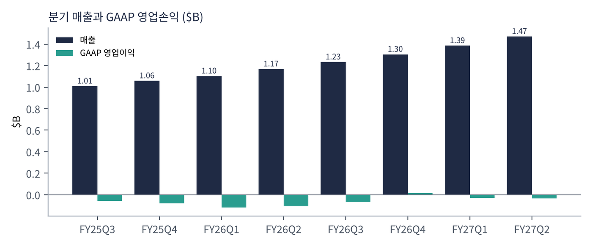
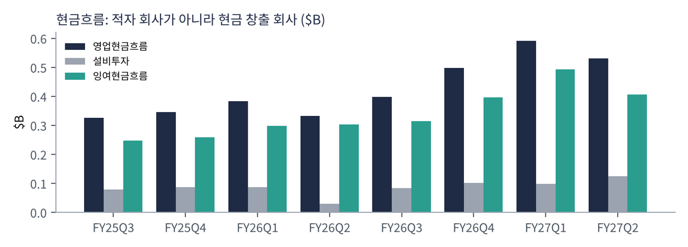
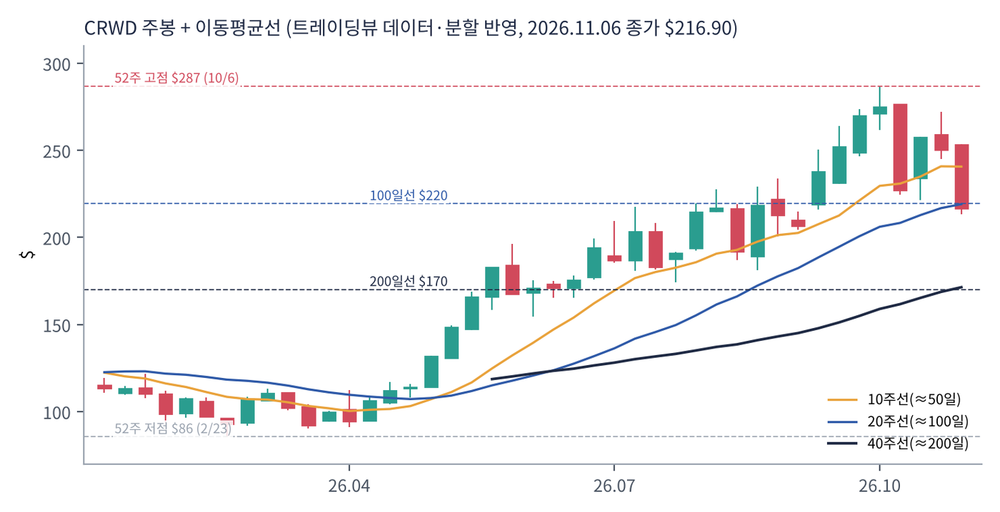
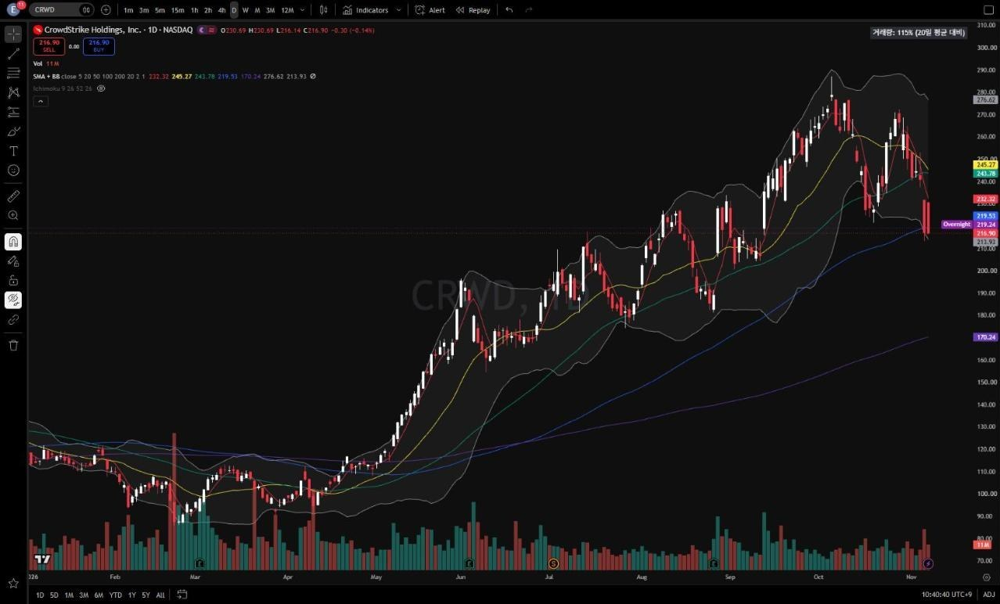
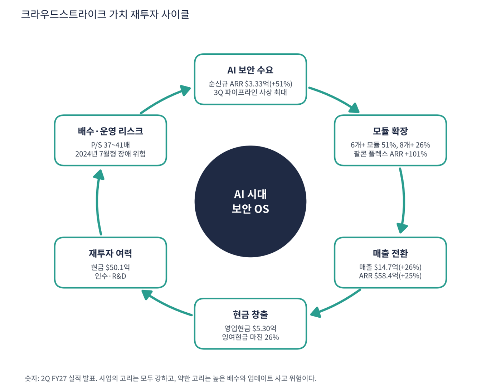

크라우드스트라이크는 클라우드 기반 사이버 보안 회사다. 노트북·서버에 설치하는 가벼운 '센서'로 해킹을 탐지하고 막는 엔드포인트 보안(EDR)에서 출발해 클라우드 보안·아이덴티티 보안·보안 로그 분석(SIEM)·위협 정보·관리형 탐지 서비스(MDR)까지 넓혔다. 2024년 7월 업데이트 오류로 전 세계 윈도우 PC 수백만 대를 멈추게 한 사고를 겪었지만 고객 이탈은 예상보다 작았다. 이번 분석 대상 중 부채로 투자하지 않고 반복 매출(ARR)로 성장하는, 이익이 GAAP로는 아직 '0 근처'인 고배수 소프트웨어다.
| 항목 | 내용 |
|---|---|
| 종목 | CrowdStrike Holdings, Inc. (CRWD) · NASDAQ · 사이버 보안 소프트웨어 · 2011년 설립 · 본사 텍사스주 오스틴 (주가는 주식 분할 반영 기준) |
| 시가총액 | 약 $2,221억 · P/S 39.8배 · GAAP 이익이 거의 없어 PER은 의미 없음 (11/6 종가 $216.90) |
| 최근 분기(2Q FY27) | 매출 $14.7억(+26%), 구독 $14.0억(+27%), ARR $58.4억(+25%), 순신규 ARR $3.33억(+51%, 사상 최대) |
| 이익·현금 | GAAP 영업손실 -$0.3억, 비GAAP 영업이익 $3.72억, 영업현금 $5.30억, 잉여현금 $3.77억, 현금 $50.1억 |
| 가이던스 | 3Q 매출 $15.23~15.29억, FY27 매출 $59.9~60.1억, ARR $66.0~66.1억, 비GAAP EPS $1.25~1.26 |
| 모듈 채택 | 구독 고객 중 6개 이상 모듈 51%, 7개 이상 35%, 8개 이상 26% |
| 다음 실적 | 3Q FY27 실적: 2026년 12월 초 발표 예정 (회계연도는 1월 말 종료) |
| 직책 | 인물 | 역할·특징 |
|---|---|---|
| 창업자·CEO | 조지 커츠 | 2011년 창업. "모든 기업이 AI 위에서 돌아갈 것이고 그것을 지키는 것이 회사 역사상 가장 큰 기회"라는 메시지의 주인 |
| CFO | 버트 포드베어 | 가이던스·잉여현금·순신규 ARR 설명 담당. 3분기 파이프라인이 사상 최대라고 밝혔다 |
경영 스타일: '플랫폼 하나에 모듈을 계속 얹고, 사고는 빠르게 수습하며, 지표는 ARR로 말한다'. 2024년 7월 사고 이후 고객 보상과 신뢰 회복에 비용을 쓰면서도 성장률을 20%대 중반으로 유지했고, 이제는 연간 순신규 ARR 성장 전망을 6.3%p 올려 34%(중간값)로 제시한다. 경영진은 GAAP 이익보다 ARR·순신규 ARR·잉여현금을 먼저 말하는 편이어서, GAAP 기준의 PER과 PEG는 이 회사를 평가하는 도구가 되기 어렵다.
가벼운 센서 하나로 엔드포인트를 지키고, 같은 플랫폼에서 클라우드·아이덴티티·SIEM·위협 정보 모듈을 켜는 구조다. 고객이 쓰는 모듈 수가 늘수록 계약이 커지고 경쟁사로 옮기기 어려워진다.
사람·기계·AI 에이전트의 신원을 지속 검증하고, AI 에이전트용 탐지·대응(AIDR)을 클라우드 AI 게이트웨이로 넓히는 것이 목표다. 팔콘 플렉스(통합 구독) ARR이 $22.9억(+101%)까지 커졌다.
| 분기 (종료월) | 매출 | YoY | 매출총이익률 | GAAP 영업이익 | GAAP 순이익 | EPS | 영업현금 | 특이 사항 |
|---|---|---|---|---|---|---|---|---|
| FY25 3Q (24.10) | $10.1억 | – | 74.8% | -$0.6억 | -$0.2억 | -0.07 | $3.3억 | 7월 사고 비용 |
| FY25 4Q (25.1) | $10.6억 | – | 74.2% | -$0.8억 | -$0.9억 | -0.35* | $3.5억 | |
| FY26 1Q (25.4) | $11.0억 | – | 74.0% | -$1.2억 | -$1.0억 | -0.42 | $3.8억 | 구조조정 |
| FY26 2Q (25.7) | $11.7억 | – | 73.6% | -$1.1억 | -$0.7억 | -0.07 | $3.3억 | |
| FY26 3Q (25.10) | $12.3억 | +22% | 75.0% | -$0.7억 | -$0.3억 | -0.14 | $4.0억 | |
| FY26 4Q (26.1) | $13.1억 | +24% | 76.2% | $0.1억 | $0.6억 | -0.02* | $5.0억 | GAAP 흑자 전환 |
| FY27 1Q (26.4) | $13.9억 | +26% | 75.3% | -$0.3억 | $0.3억 | 0.11 | $5.9억 | |
| FY27 2Q (26.7) | $14.7억 | +26% | 74.6% | -$0.3억 | $0.05억 | 0.01 | $5.3억 | 순신규 ARR 최대 |
EPS는 희석 주당순이익(GAAP, SEC 제출 자료 기준)이다. *는 4분기를 '연간 EPS − 1~3분기 합'으로 계산한 근사치라 실제 발표값과 다를 수 있다.


흐름 요약: 분기 매출이 2년 동안 $10.1억에서 $14.7억으로 46% 늘었고 성장률은 +22% → +26%로 가속했다. 매출보다 먼저 움직이는 순신규 ARR이 +51%라 6~12개월 뒤 성장률이 더 높아질 수 있다. GAAP 영업이익은 -$0.3억으로 사실상 0이다. 비GAAP 영업이익 $3.72억과의 차이 약 $4억이 주식 보상과 인수 관련 비용이다. 영업현금은 분기 $5억 안팎으로 꾸준하다. YoY는 확인된 4개 분기만 표시했다(그 이전 분기의 1년 전 매출은 이번 수집에서 확인하지 못했다).
| 구성 | 돈을 버는 방식 | 2Q FY27 | 비고 |
|---|---|---|---|
| 구독 | 팔콘 플랫폼 모듈(엔드포인트, 클라우드, 아이덴티티, SIEM, 위협 정보, MDR 등)을 연간 구독. 매출의 95% | $14.0억 (+27%) | GAAP 매출총이익률 78%, 비GAAP 81% |
| 전문 서비스 | 사고 대응, 컨설팅 | 약 $0.7억 | 구독의 도입 입구 역할 |
| 팔콘 플렉스 | 고객이 크레딧을 사서 필요한 모듈을 자유롭게 쓰는 통합 구독 | ARR $22.9억 (+101%) | 전체 ARR $58.4억의 약 39% |
성장 공식은 '고객 수 × 고객당 모듈 수'다. 구독 고객의 절반 이상이 6개 이상 모듈을 쓰고 4분의 1이 8개 이상을 쓴다. 팔콘 플렉스는 이 확장을 쉽게 만들어, 고객이 한 플랫폼에 보안을 통합할수록 경쟁사로 옮기기 어려워진다. 순신규 ARR은 신규 고객과 기존 고객 모두에서 사상 최대였고 달러 기준 총·순 유지율도 올랐다.
커츠 CEO는 2분기 메시지에서 AI 도입에는 보안이 필요하며 모든 기업이 AI 위에서 돌아갈 것이라고 했다. 수요 변화를 '미토스 모멘트'라 불렀는데, 고성능 AI 모델이 해킹에 쓰일 수 있다는 우려가 보안 지출을 키운 시점을 가리키는 것으로 해석된다(발언 문맥에 따른 내 해석).
| 축 | 최근 움직임 |
|---|---|
| AI 에이전트 보안 | 사람·기계·AI 에이전트 신원을 지속 검증, AI 탐지·대응(AIDR)을 데이터브릭스·구글 클라우드·애저의 AI 게이트웨이로 확장 |
| 플랫폼 통합 | 엔드포인트·클라우드·아이덴티티·데이터를 하나로, SIEM에서 기존 업체 대체 |
| 파트너십·인수 | AWS, 세레브라스, 슈바르츠 디지츠(유럽, XM 사이버 기술 인수). 트레이딩뷰 뉴스는 피들러·드레드노드 인수도 전했다(헤드라인 기준) |


위: 트레이딩뷰 주봉 데이터로 재구성(10·20·40주선). 아래: 트레이딩뷰 공개 차트 일봉 캡처(작도 숨김, 이동평균선·볼린저밴드만 표시).
| 이동평균 | 값 | 종가 대비 | 해석 |
|---|---|---|---|
| 5일선 | $232.32 | -6.6% | 11월 첫 주 -14% |
| 20일선 | $245.27 | -11.6% | 50일선과 거의 겹침 |
| 50일선 | $243.78 | -11.0% | 20일선과 겹침 |
| 100일선 | $219.53 | -1.2% | 지금 시험 중인 지지선 |
| 200일선 | $170.24 | +27.4% | 장기 추세 건재 |
주봉 흐름: 2월 'AI 대체 우려' 매도로 $86 연저점 → 5월부터 AI 보안 수요 부각 → 7월 $218 → 9~10월 $287(10/6 신고가) → 10월 둘째 주 -17%, 11월 첫 주 -14% → 11/6 $216.9 마감. 10월 고점 대비 -24% 조정이지만 200일선($170) 위(+27%)다.
| 규칙 | 기준 | 현재 값 | 신호 |
|---|---|---|---|
| 장기 추세 필터 | 종가 vs 200일선 | $216.90 > $170.24 | 매수 |
| 중장기 교차 | 50일선 vs 200일선 | $243.78 > $170.24 | 매수 |
| 단기 교차 | 20일선 vs 50일선 | $245.27 > $243.78 | 매수 |
| 돈키언 채널 | 55일 고가 $286.99 / 저가 $181.24 | 중간값 $234.12 아래 | 매도 |
| 1개월 모멘텀 | 21거래일 수익률 | -17.5% (기준 $263.01) | 매도 |
| 3개월 모멘텀 | 63거래일 수익률 | -3.7% (기준 $225.16) | 매도 |
| 6개월 모멘텀 | 126거래일 수익률 | +64.4% (기준 $131.94) | 매수 |
| 12개월 모멘텀 | 252거래일 수익률 | +62.4% (기준 $133.54) | 매수 |
| 종합 (8개 평균) | +0.25 | 매수 우위 |
해석: 추세 신호 3개와 6·12개월 모멘텀이 매수이고 단기 모멘텀과 돈키언 채널이 매도다. 20일선($245.3)이 50일선($243.8)을 겨우 앞서 있어 며칠 안에 단기 교차가 매도로 바뀔 가능성이 크다(점수 0). 14일 ATR $14.76 (6.8%). 스캐너상 11/9 종가는 11/6 대비 +5.4%(약 $228.6)로 3개월 기준가($225)를 회복한 상태이나, 이 보고서는 11/6 종가 기준으로 통일했다.
| 가격 | 무엇이 바뀌나 | 의미 |
|---|---|---|
| $225 | 3개월 기준가 | 회복 시 매수 전환 → 점수 +0.5 |
| $234 | 돈키언 중간값 | 회복 시 점수 +0.75 |
| $170 | 200일선 | 이탈 시 장기 추세 꺾임 |
| 구분 | 가격대 | 근거 |
|---|---|---|
| 저항 2 | $257 ~ 263 | 10월 셋째 주 고점, 1개월 기준가 |
| 저항 1 | $225 ~ 245 | 3개월 기준, 돈키언 중간값, 20·50일선 |
| 지지 1 | $200 ~ 220 | 100일선, 9월 박스($204~214) |
| 지지 2 | $181 ~ 190 | 8월 저점, 55일 저점 |
펀더멘털이 가장 깨끗한 종목의 첫 조정이다. 진입은 $212~220에서 40%, $200~205에서 40%, $234 회복 시 20%(평균 약 $213, 손절 $180 기준 손익비 1:1~1:2). 목표는 1차 $245(20·50일선), 2차 $280(10월 고점권). $200 종가 이탈은 9월 박스 붕괴, $180 이탈이면 손절이고 200일선($170)까지 열려 있다. 트리거는 소프트웨어 업종 밸류에이션 축소, 순신규 ARR 둔화, 대형 보안 사고다.
| 악재 요인 | 내용 | 강도 |
|---|---|---|
| 밸류에이션 | P/S 37~41배, 잉여현금 대비 약 150배. 성장 둔화 신호에 민감하고 P/S 25배만 가도 -33% | 높음 |
| 경쟁 | 마이크로소프트(디펜더), 팔로알토, 센티넬원, 구글(위즈) | 중간 |
| 운영 리스크 | 2024년 7월 사고처럼 업데이트 오류가 대규모 장애로 이어질 위험 | 중간 |
| 주식 보상 | GAAP 적자의 주원인(분기 약 $4억). 희석 관리 필요 | 참고 |
| 티커 | 회사 | 시가총액 | PER(TTM) | PEG | P/S | EPS 성장(YoY) |
|---|---|---|---|---|---|---|
| CRWD | 크라우드스트라이크 | $222B | 적자 | – | 39.83배 | – |
| PLTR | 팔란티어 | $386B | 112.4배 | 0.45 | 53.69배 | +234% |
| MSFT | 마이크로소프트 | $3,940B | 27.7배 | 0.74 | 11.09배 | +36% |
| ORCL | 오라클 | $351B | 18.2배 | 0.37 | 4.70배 | +48% |
| GOOGL | 알파벳 | $3,476B | 14.9배 | 0.17 | 7.39배 | +89% |
| META | 메타 | $1,560B | 20.8배 | 0.67 | 6.18배 | +30% |
보안 전문 경쟁사(팔로알토·지스케일러 등)는 이번 수집에 없어 대형 소프트웨어·플랫폼 기업으로 대체했다. 적자는 PER 산출 불가를 뜻한다.
비교 결론: 이 표에서 크라우드스트라이크는 PER을 계산할 수 없는 유일한 종목이고, P/S 39.8배는 팔란티어(53.7배) 다음으로 높다. 마이크로소프트·알파벳·메타·오라클은 PER 15~28배로 이익이 확인된 가격인 반면, 크라우드스트라이크는 이익이 아니라 ARR 성장 기대에 값을 매기고 있다.
크라우드스트라이크는 현금이 쌓이는 회사다. 현금 $50.1억에 분기 영업현금 $5억대라 '런웨이'(남은 현금으로 몇 년 버티나) 개념이 필요 없다. 대신 매출의 약 40배인 주가가 어느 배수까지 내려갈 수 있는지를 점검했다.
| 지표 | 값 | 계산·출처 | 해석 |
|---|---|---|---|
| 현금성 자산 | $50.1억 | 2Q FY27 발표 | 연 영업현금(약 $20억)의 2.5배 |
| 영업현금흐름 (TTM) | $20.2억 | FY26 3Q ~ FY27 2Q 합 (위 표) | TTM 매출 $54.0억의 약 37% |
| 잉여현금흐름 | 2Q $3.77억 (매출의 26%) | 회사 발표 | TTM 환산 약 $14~15억 (연 환산, 내 추정) |
| 주가 / 잉여현금 (연 환산) | 약 150배 | 시총 $2,221억 ÷ 약 $14.5억 | 이익이 아니라 성장 기대에 값을 매기는 구간 |
| 런웨이 | 해당 없음 | 현금 흐름이 흑자 | 자금 조달 압박 없음 |
| 가정 P/S (FY27 매출 $60.0억 기준) | 시가총액 | 주가 | 현재($216.9) 대비 |
|---|---|---|---|
| 37배 (현재, 가이던스 기준) | $2,221억 | $216.9 | – |
| 30배 | $1,800억 | 약 $176 | -19% |
| 25배 | $1,500억 | 약 $146 | -33% |
| 20배 | $1,200억 | 약 $117 | -46% |
P/S 30·25·20배는 내가 둔 스트레스 가정이다. 주식 수는 현재 시총과 주가 비율로 고정했다. 2월 저점 $86은 소프트웨어 업종 'AI 대체 우려' 때의 가격이며 당시 P/S는 현재보다 훨씬 낮았다.
| 기준 | 매출 | P/S | 비고 |
|---|---|---|---|
| 트레이딩뷰 표시값(11/6 환산) | – | 39.8배 | |
| TTM 4분기 합 | $54.0억 | 41.1배 | 시총 $2,221억 ÷ $54.0억 |
| FY27 가이던스 중간값 | $60.0억 | 37.0배 | 회사 가이던스 |
| 동종 소프트웨어 | – | – | 팔란티어 53.7, 마이크로소프트 11.1, 오라클 4.7 |
해석: 크라우드스트라이크의 P/S는 마이크로소프트·오라클보다 훨씬 높고 팔란티어보다 낮다. 성장률 +26%에 대한 값으로는 비싸지만, 순신규 ARR 가속과 잉여현금 마진 26%가 받쳐 주는 점이 단순한 고배수 성장주와 다르다. 전용 보안 경쟁사(팔로알토 등) 수치는 이번에 수집하지 못했다.
| 지표 | 값 | 판정 |
|---|---|---|
| GAAP 영업이익 (2Q) | -$0.3억 | 손익분기 |
| 비GAAP 영업이익 (2Q) | $3.72억 (25%) | 흑자 |
| 영업현금흐름 (2Q) | $5.30억 (36%) | EBITDA에 가까운 현금 기준 대용 지표 |
| 주식 보상·인수 비용 | 약 $4억 / 분기 | GAAP과 비GAAP 영업이익 차이 |
| GAAP EBITDA | 산출 불가 | 분기 상각비 수치를 이번에 확인하지 못함. 영업현금으로 대체 |
EBITDA 대신 영업현금(매출의 36%)과 비GAAP 영업이익률(25%)로 수익성을 본다. 영업현금이 비GAAP 영업이익보다 큰 것은 구독료를 선불로 받기 때문이다(이연 매출).
| 방식 | PER | EPS 성장률 | PEG | 판정 |
|---|---|---|---|---|
| 트레이딩뷰 (GAAP, TTM) | 의미 없음 | – | 산출 불가 | GAAP 순이익이 거의 0 |
| 비GAAP EPS (FY27 가이던스 $1.255) | 약 173배 | 미확인 | 산출 불가 | FY26 비GAAP EPS를 확인하지 못함 |
| PER 30배가 되려면 필요한 순이익 | 30배 | – | – | 시총 $2,221억 ÷ 30 = $74억 (비GAAP 영업이익 FY27 $15.0억의 약 5배) |
| 잉여현금 기준 PEG (내 가정) | 약 150배 (P/FCF) | 연 +25% 가정 | 약 6.0 | 기준 초과 |
| PEG 1.0이 되려면 필요한 FCF 성장률 | 약 150배 | 연 +150% | 1.0 | 현실성 낮음 |
판정: PEG 산출 불가, 대체 지표로도 기준(1.0 이하) 초과. GAAP 이익이 없으니 PEG를 계산할 수 없고, 잉여현금을 이익으로 보고 매출 성장률과 같은 연 25% 성장을 가정해도 6배다. 이 종목은 PEG가 아니라 순신규 ARR 가속과 업종 재평가로 움직이는 주식이다. 잉여현금 성장률 25%는 내 가정이며 확인된 수치가 아니다.

이 사이클은 하이퍼스케일러형과 달리 빌린 돈이 아니라 고객의 선불 구독료가 원동력이다. 모듈이 늘수록 ARR이 커지고, 늘어난 현금이 연구개발·인수·영업에 재투자되어 다시 모듈이 늘어난다.
| 고리 | 현재 숫자 | 고리 강도 | 약해지는 신호 |
|---|---|---|---|
| ① AI 보안 수요 | 순신규 ARR $3.33억(+51%), 3Q 파이프라인 사상 최대 | 강함 | 순신규 ARR 가속 중단 |
| ② 모듈 확장 | 6개+ 모듈 51%, 8개+ 26%, 팔콘 플렉스 +101% | 강함 | 플렉스 크레딧 소진율 하락 |
| ③ 매출 전환 | 매출 +26%, ARR +25% | 강함 | 성장률 20% 아래로 하락 |
| ④ 현금 창출 | 영업현금 $5.30억, 잉여현금 마진 26% | 강함 | 잉여현금 마진 20% 아래 |
| ⑤ 재투자 | 현금 $50.1억으로 인수·R&D 여력 | 여유 | 대형 인수 후 통합 실패 |
| ⑥ 밸류에이션·운영 리스크 | P/S 37~41배, 2024년 7월 같은 장애 위험 | 약한 고리 | 소프트웨어 업종 재평가, 대형 사고 |
구조: 사업의 고리는 모두 강하고 약한 고리는 사업 밖(주가 배수, 업데이트 사고)에 있다. 이번 분석 대상 중 재무 위험이 가장 작은 사이클이다.